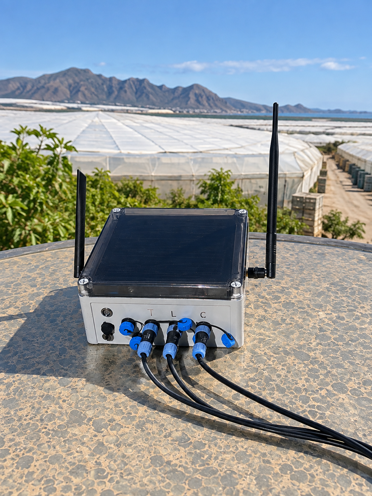
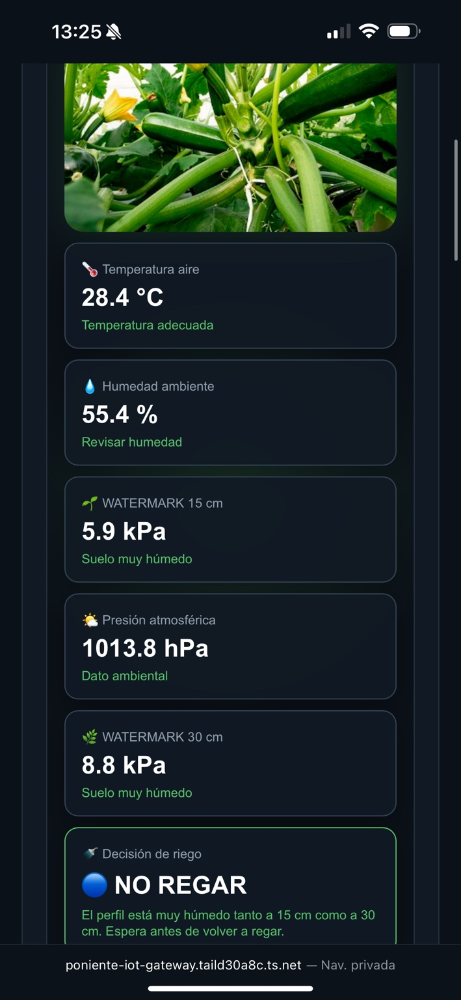

💧
Riego y suelo
Seguimiento de la tensión hídrica con WATERMARK y posibilidad de integrar humedad, temperatura y conductividad eléctrica del suelo.
Monitoriza suelo, clima y riego desde una sola plataforma. Poniente IoT acerca los datos del cultivo al agricultor para entender mejor qué está ocurriendo en cada sector.
Un sistema pensado especialmente para invernaderos: sensores en campo, nodos autónomos y una plataforma que reúne las variables principales en un mismo lugar.
Seguimiento de la tensión hídrica con WATERMARK y posibilidad de integrar humedad, temperatura y conductividad eléctrica del suelo.
Temperatura, humedad relativa y otras variables ambientales para conocer las condiciones reales alrededor del cultivo.
Integración prevista de radiación solar y PAR para relacionar la luz disponible con el comportamiento del cultivo.
Entrada para contadores de pulsos y caudalímetros, orientada al seguimiento del agua aplicada en cada instalación.
Comunicación de largo alcance para llevar los datos desde el invernadero hasta el gateway sin depender de Wi‑Fi en cada punto.
Consulta de gráficas y evolución de las variables para comparar periodos y detectar cambios en suelo y ambiente.
Una arquitectura sencilla: medir, transmitir y visualizar. El sistema se plantea de forma modular para poder incorporar nuevas sondas y sectores.
Los sensores instalados en suelo y ambiente recogen las variables de interés del cultivo.
Los nodos envían las lecturas mediante LoRa hacia el gateway de la explotación.
La plataforma organiza los datos para ver el estado actual y los históricos desde móvil u ordenador.

Nuestro sistema integra en un único equipo la lectura de sensores, la comunicación inalámbrica y la alimentación autónoma para facilitar la monitorización de diferentes zonas del invernadero.

La plataforma que estamos desarrollando muestra las lecturas del invernadero y facilita la consulta de históricos desde cualquier dispositivo autorizado.
La configuración puede adaptarse al tipo de cultivo y a las variables que interese monitorizar.
Estamos desarrollando una solución de monitorización orientada a la agricultura de invernadero. Escríbenos para conocer el proyecto, plantear una prueba o estudiar las necesidades de tu explotación.